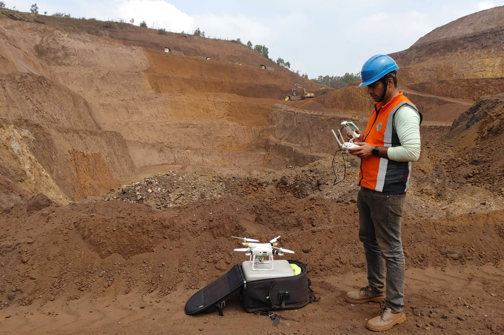
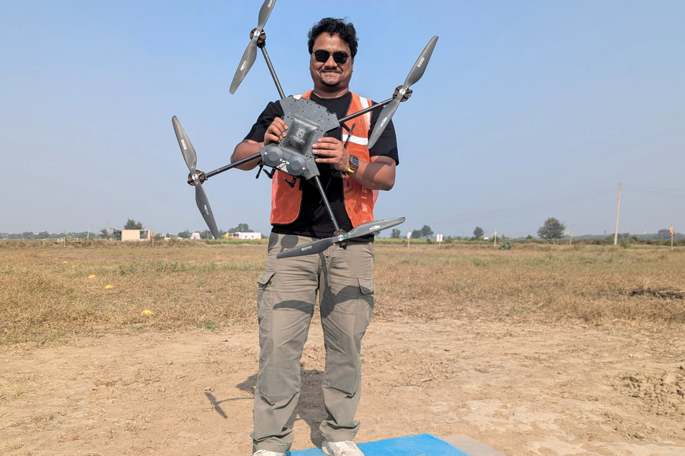
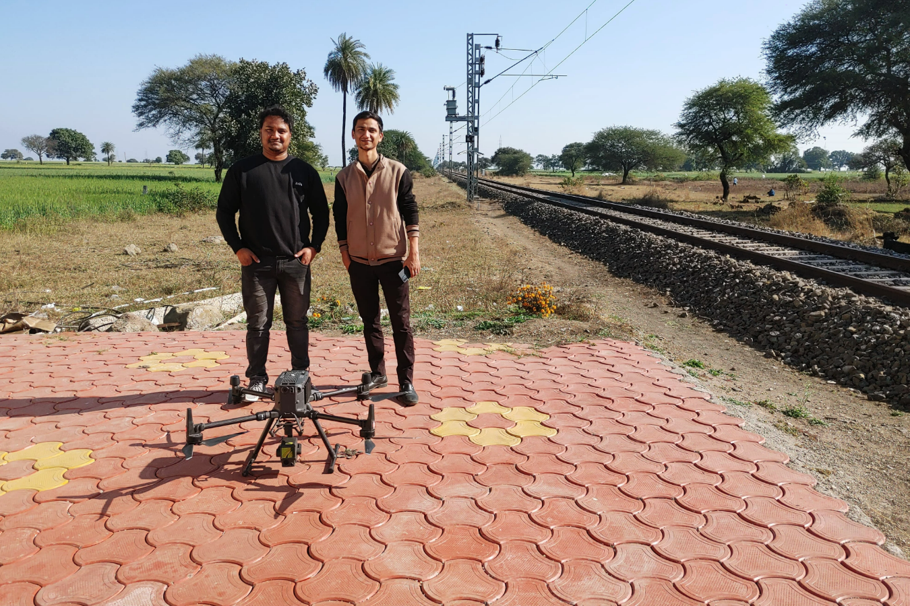
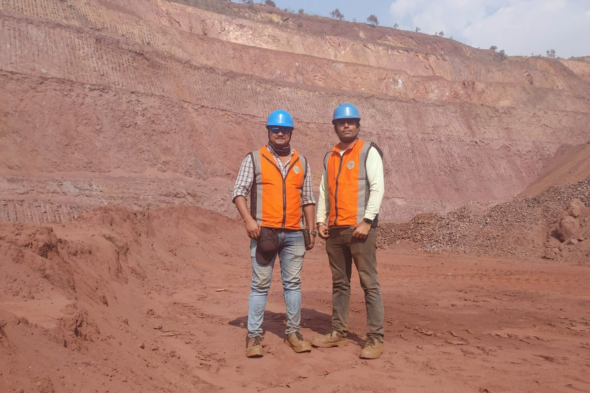
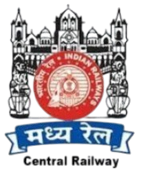
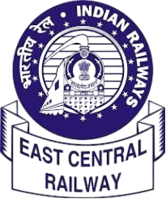
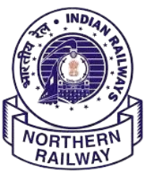
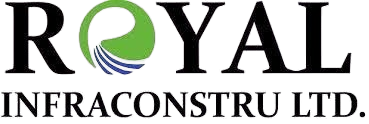
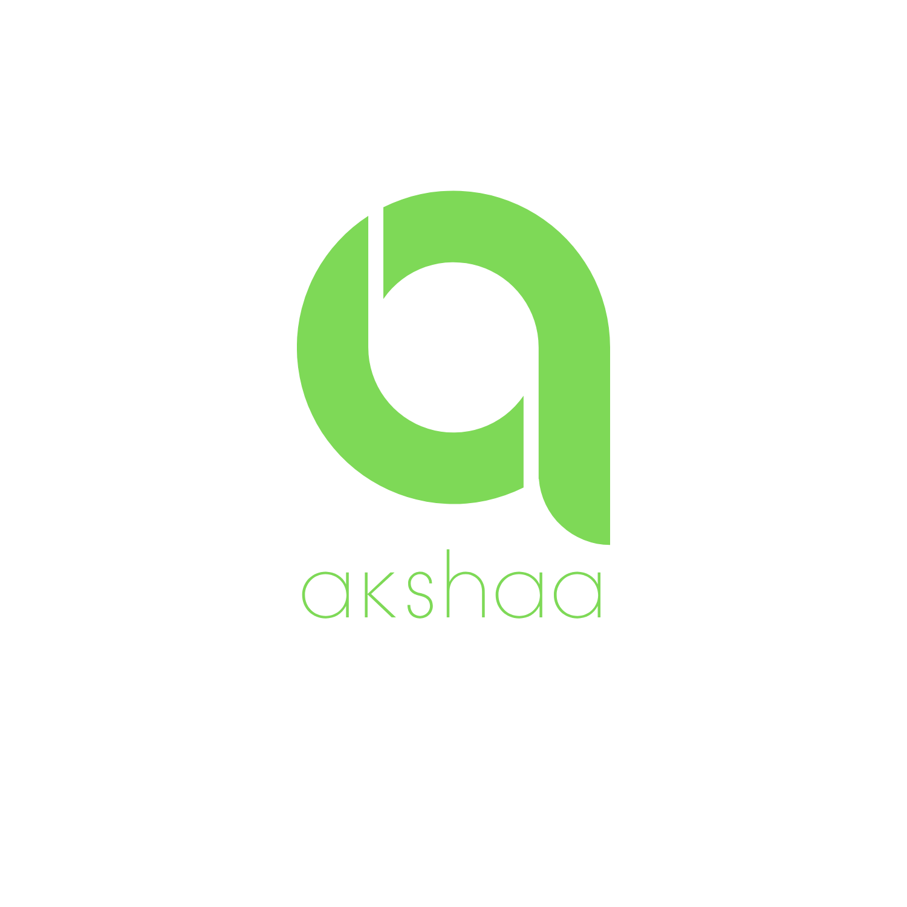
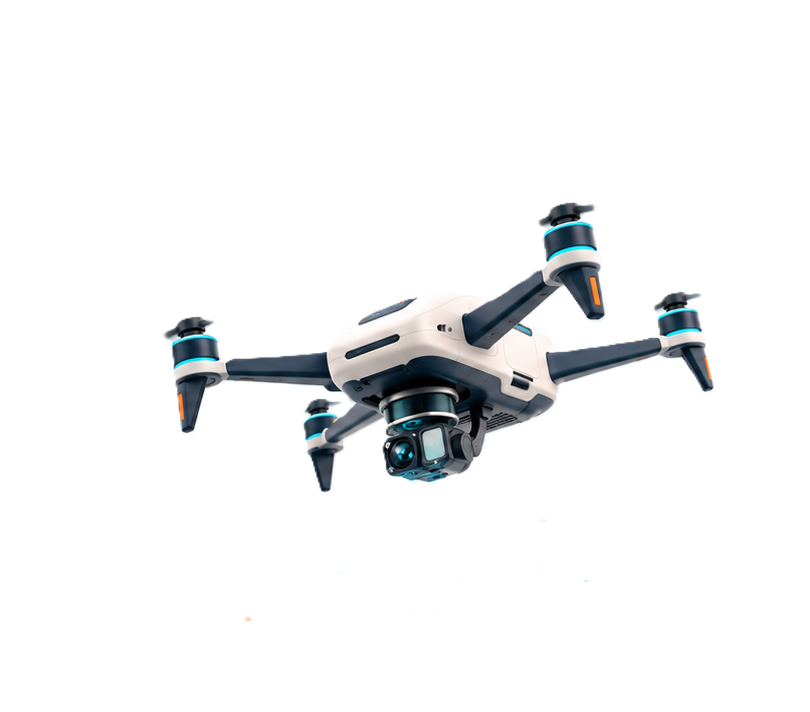

Chamba, Himachal Pradesh
NH 154A highway rehabilitation
Photogrammetry and ground survey for NH 154A. Orthophotos, terrain models, and contours for the design team.
Roads & highwaysRailways, highways, cities, mines and water systems — surveyed from the air and from the ground, then handed over as the terrain models, drawings and GIS layers your engineers actually design from.





Central Railway
Eastern Railway
Northern Railway
RoyalIris is a Government of India-recognized Startup India venture working in surveying, mapping and monitoring through drone technology, AI-driven systems and modern survey techniques.
We serve agriculture, construction, real estate and environmental monitoring, with expertise in topographical surveys, LiDAR mapping, GIS, hydrology and satellite photogrammetry. Our AI-powered AVSM (Aerial Video Smart Monitor) supports precise aerial monitoring and actionable insights.
We focus on accuracy, sustainability and cost-effective, real-time geospatial solutions, helping industries improve data collection, make better decisions and optimise operations.
We use advanced drones for surveying, monitoring, mapping, GIS and detailed design consultancy to provide precise, cost-effective and efficient aerial survey solutions.
Our aim is to be a leading provider of aerial survey and GIS services, known for our own AI and hardware technology, quality work and commitment to safer, more sustainable infrastructure and resource management.
We develop our own AI and hardware alongside the survey and design work we deliver.
Meet the teamPhotogrammetry and ground survey for NH 154A. Orthophotos, terrain models, and contours for the design team.
Roads & highwaysUAV LiDAR for a proposed road corridor. A classified point cloud, ground model, and contours for feasibility and design.
LiDAR surveyAerial imagery and ground measurements brought together for alignment, sections, and yard plans.
Railway engineeringBenchmarks and checkpoints go in before a drone leaves the case. That is what makes the capture repeatable, the terrain model checkable, and the drawing something your design team can sign off on.
Reconnaissance, datum, benchmarks, GCPs, checkpoints, and corridor limits are planned before the primary acquisition begins.
RGB photogrammetry, LiDAR, satellite stereo, or ground survey is selected around visibility, access, coverage, and required detail.
Point clouds are calibrated and classified, imagery is orthorectified, terrain models are checked, and outputs are prepared for CAD and GIS review.
Akshaa reads drone, aerial and satellite imagery, surfaces the objects and changes that matter, and keeps every finding pinned to the frame it came from.
Six reasons the same clients keep calling us back.
Cutting-edge technology to deliver unparalleled accuracy in data capture, ensuring your enterprise's requirements are met with unmatched precision.
Experience lightning-fast mapping and surveying services from Iris Aerial that outperform traditional methods, saving you time and resources without compromising quality.
Harness the power of advanced drone technology and streamlined processes with Iris Aerial to achieve faster project turnarounds and elevated operational efficiency.
With extensive industry experience, Iris Aerial ensures you get exceptional results tailored to your project's needs, maximizing value without breaking the budget.
We use eco-friendly and sustainable practices to minimize environmental impact while delivering exceptional results.
We leverage AI, machine learning, and cloud-based platforms to provide smarter, faster, and more efficient drone solutions.
Placeholder quotes — to be replaced with approved client references.
Iris gave us a usable design base for a corridor we had been arguing about for two seasons. The control held, the contours held, and our alignment team stopped guessing.
They flew a difficult hill section in a week and came back with a terrain model our consultants could check line by line. That is rare.
What sold us was the review trail. Every observation pointed back at the frame it came from, so our own analysts could confirm it instead of taking it on faith.
Send the corridor or boundary, the design stage you are at, and the accuracy you need to hit. We will come back with the control and capture plan to get you there.
Aerial surveys, ground measurements and geospatial analysis for infrastructure and land projects. We plan the survey, capture the site and prepare the outputs your team needs.
Railways, roads, cities, mines and water systems each call for a different survey plan. Explore the methods and outputs for your sector.
Topography, alignment, structures, yards, drainage, and existing assets are captured as one coordinated base for new lines, doubling, and detailed engineering.
Mountain corridors and long rights of way are mapped with the capture method suited to access, vegetation, relief, and design accuracy.
Reality capture, feature extraction, and GIS-ready layers help planners read land use, infrastructure, drainage, and change without separating the map from its source.
Repeatable terrain capture supports volume review, pit and dump mapping, slope context, and pre/post activity comparisons.
Hydrographic and aerial observations are brought together for reservoirs, channels, dams, watersheds, irrigation, and flood-sensitive landscapes.
Five stages, in order, on one road. Nothing downstream starts until the stage before it checks out.
Set the question, coverage and accuracy.
Place GCPs, benchmarks and the control network.
Fly or walk complete coverage, with field QA.
Calibrate, classify, orthorectify, then review.
Issue CAD/GIS terrain, drawings and reports.
A look at the sites, survey methods, and outputs behind our work.
Orthophoto, DTM, DSM, contours, tunnel alignment, and approach-road inputs.
NH 154A, Chamba · Photogrammetry & ground survey
Classified point cloud, DTM, orthophoto, and contours for feasibility and design.
Alignment, L-section, cross-sections, yard and ESP plans, and hydrological inputs.
Explore project methods and deliverables in our case study.
Share the corridor or site, design stage, coverage, accuracy expectation, and intended handoff. We will help shape the control and capture plan.

Akshaa brings object detection, change analysis and human review into one place. Work with drone, aerial and satellite imagery while keeping every observation linked to its source.
For planning authorities, infrastructure owners and project teams who need to know what has been built, what has moved and where a site stands against the last survey.
For analysts working repeat captures of the same scene, where the question is what is present now, what has moved, and whether the result holds up to review.
The civil side of Akshaa works in daylight optical imagery over places that are being built. It maps infrastructure, compares survey dates and turns site progress into layers a planning or project team can act on.
Review new construction, changing assets and project progress across repeat surveys. Each observation stays connected to a place, a date and an image.
Bring in georeferenced drone, aerial, satellite, and project imagery with time and area context.
Use task-specific models and spatial rules to locate objects, conditions, and change candidates.
Keep the source visible while reviewers accept, reject, annotate, and export observations.
Locate and organise roads, buildings, utilities, vegetation, and project-specific features.
Compare aligned captures and keep new, missing, or altered observations tied to time.
Review construction and site change against the previous capture or planned context.
Move confirmed observations into maps, inventories, reports, and operating workflows.
The defence side works the same scene again and again. It locates assets, aligns repeated captures and presents the differences for an authorised analyst to confirm — with the original frame never more than a click away.
Review potential changes in asset position, structures and activity alongside the original imagery. Analysts can inspect each model result before using it.
Task-specific models locate relevant objects across optical scenes and refine broad detections into useful asset classes.
Time-separated captures are aligned so newly observed, absent, static, and changed objects can be reviewed together.
Asset density, proximity, class severity, and change indicators help authorised analysts focus and corroborate findings.
Akshaa accelerates visual review and structures evidence; it does not replace authorised judgement. Findings remain connected to source imagery and should be corroborated before operational use.
Tell us which imagery you hold and what you need read from it. We will walk you through the workflow on your own data.
We combine aerial sensing with ground measurements. The terrain, required detail and final output determine which tools we use.

LiDAR records the shape and height of a site using laser pulses. It supports corridor surveys and terrain modelling, including sites with vegetation.
We classify the point cloud to separate ground, buildings and vegetation, then prepare terrain models and contours for engineering use.
Photogrammetry turns overlapping photographs into maps and 3D models. It is useful for site documentation, surface measurements and progress surveys.
Image quality, capture geometry and surveyed ground control determine the quality of the result. Additional views help cover features hidden from the first flight.
Satellite imagery provides a wider view of land, infrastructure and environmental change. Repeated captures help compare the same area over time.
We select imagery for its date, resolution and coverage, then combine it with ground control and GIS data for mapping and analysis.
DGPS and electronic total stations establish survey control and measure detailed positions on site. They connect aerial data to a common coordinate system.
Documented control points and independent checks help ensure that maps, models and engineering drawings work together.
GIS connects features with their location and project information. AI helps locate assets and flag changes in imagery for review.
Akshaa keeps detections linked to their source images so people can check the results before they move into maps, inventories and reports.
Surveyors, engineers, AI developers and project managers — and the occasional five-a-side match. Our work takes us from the office in Dwarka to survey sites across India, and we rather enjoy both ends of it.
Fly a site, process the point cloud, train the model, or get a project over the line. If you care about the details and like working across disciplines, there is room for you here.
Open a discipline to read what the work actually involves, then apply. Send your résumé and one project or work sample — we read the sample first.
careers@irisaerial.in ↗Surveying, GIS, remote sensing, photogrammetry and LiDAR.
Survey workflows, GIS, remote sensing, photogrammetry or LiDAR processing. Tell us which tools you use, how you check your work, and whether your strengths are in field operations, processing or both.
Share a mapping sample, project summary or portfolio that explains your contribution and the problem you helped solve.
Computer vision, geospatial data and applied machine learning.
Python, computer vision, geospatial data, data engineering or model deployment. We are interested in careful experiments, reproducible work and your ability to explain where a model succeeds and where it needs review.
Share a repository, research project or case study with the dataset, your approach, evaluation and your individual contribution.
Business development, project coordination and client communication.
Experience in business development, project coordination or client communication. Show how you organise work, prepare proposals and keep a project moving.
Share a project, proposal, campaign or coordination example and explain the responsibility you held and what you learned.
Application for the selected role · tell us about yourself and share a concise resume.